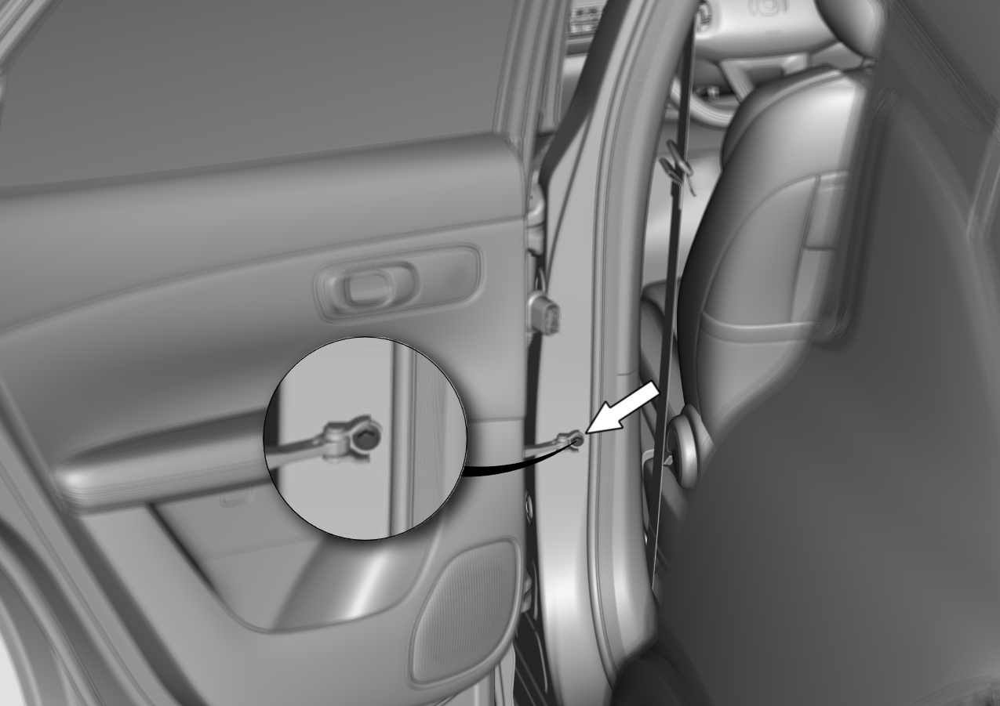
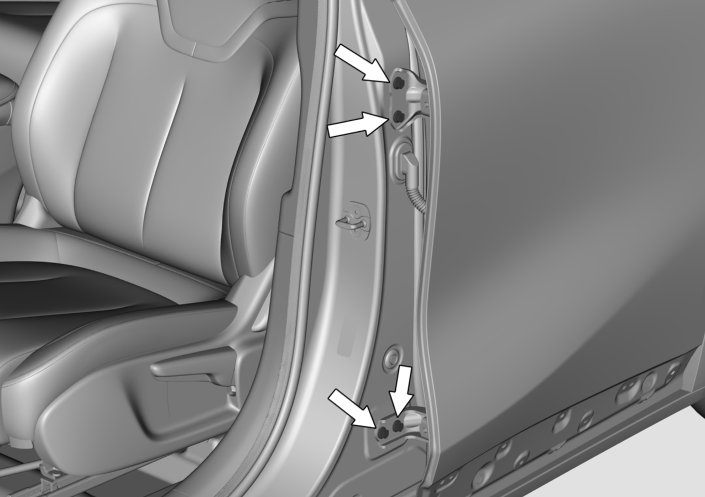

Регулировка задней двери
Внимание
1. При регулировке задней двери автомобиль должен быть неподвижно установлен на горизонтальной поверхности земли,
2. Регулировка выполняется при содействии одного сборщика.
1. С помощью торцевой головки № 13 повернуть (без выкручивания) крепежные болты петли задней двери (со стороны двери) в месте, указанном стрелкой на рисунке, и отрегулировать заднюю дверь. Момент затяжки болтов: 33 ± 3 N.m.

Внимание
1. Если при закрытом состоянии задней двери зазоры по всему периметру равномерны, дверь не утоплена внутрь и не выступает наружу, а контуры выровнены, это означает, что задняя дверь отрегулирована правильно.
2. Если в соответствии с вышеуказанными шагами не удалось достичь требуемого результата регулировки, можно обратиться к следующим шагам для дальнейшей регулировки
2. С помощью торцевой головки № 10 выкрутить крепежный болт ограничителя открывания задней двери (со стороны боковины) в месте, указанном стрелкой на рисунке.

Момент затяжки болтов: 23 ± 3 N.m
3. С помощью торцевой головки № 13 повернуть (без выкручивания) крепежные болты верхней петли (со стороны боковины) и нижней петли задней двери для регулировки задней двери.
Момент затяжки болтов: 33 ± 3 N.m
